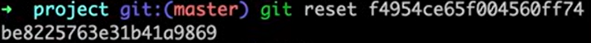
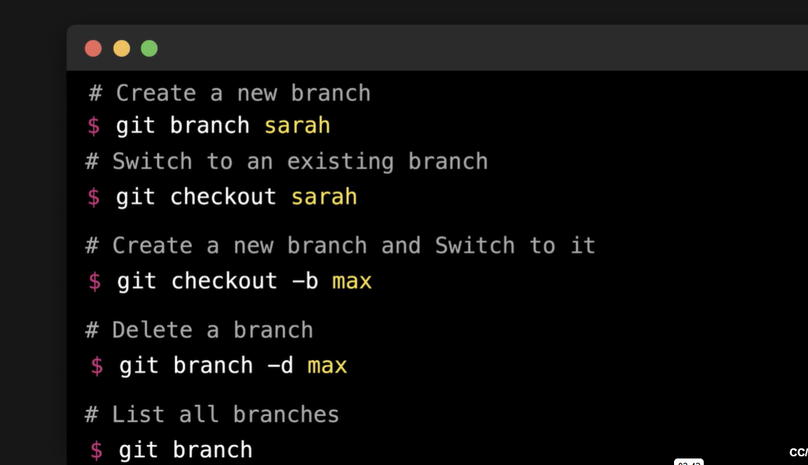
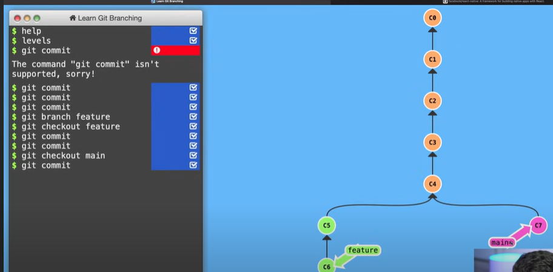
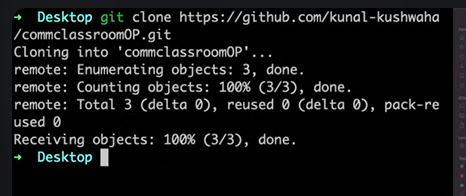
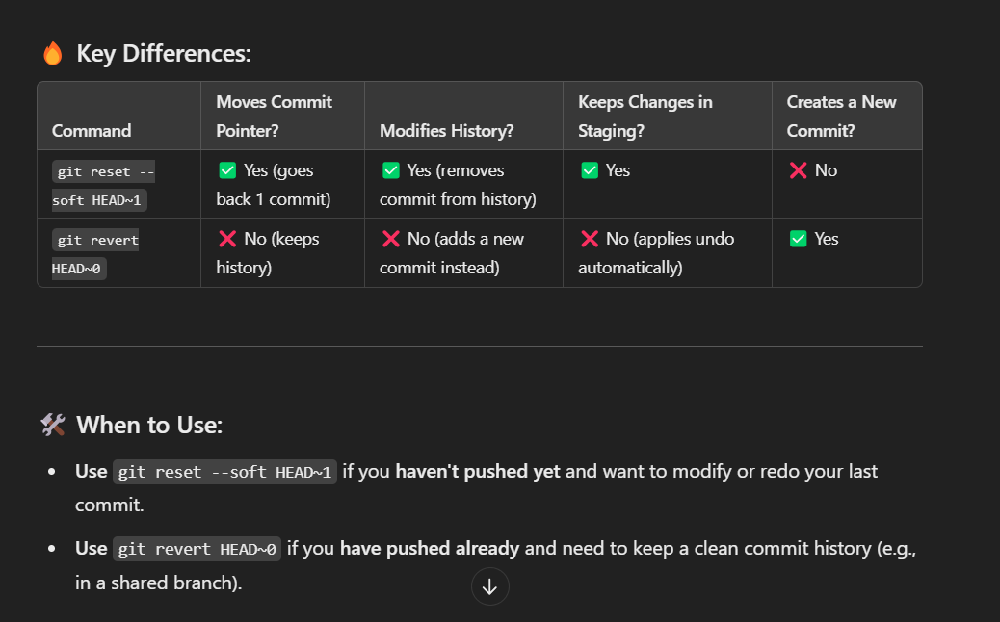

GIT AND GITHUB
- Github is a platform or online website that allows us to host our code
- Repository is a folder where all the changes are saved
- Other hosting platforms : Gitlab, Bitbucket
- Branches allow you to develop features, fix bugs, or safely experiment with new ideas in a contained area of your repository
- You always create a branch from an existing branch. Typically, you might create a new branch from the default branch of your repository
- A fork in GitHub is a copy of a repository that allows users to make changes without affecting the original repository
GIT COMMANDS
- ls - list command (lists the history of the project)
- mkdir folder_name - To create a new folder
- cd folder_name - Change the directory to that particular folder
- git init - Initialize an empty git repository
- ls -a - To display the hidden files(anything starts with dot [.])
- ls .git - To list what's inside .git folder
- touch names.txt - To create a new file
- git status - To know the status of the repository
- git add . / git add index.html - Put all the untracked files into the staging area
- git commit -m "Any_message" - To save them in the git history
- git config user.name "name"
- git config user.email "email"
- vi index.html - To edit the file
- cat index.html - Displays the content of the file
- git restore --staged index.html - This is used to take the file out of staging area
- git log - Shows the entire history
- git log --name-only - To know the name of the file that is committed
- git log --graph --decorate - To visually represent the commit history with branch structure
- rm -rf index.html - To delete the file
- git reset commit_id - If unfortunately deleted a file this command is been used and all the commits above it will be removed and put under unstaged area

- git stash - Takes your uncommitted changes (both staged and unstaged), saves them away for later use, and then reverts them from your working copy
- git stash pop - Brings back from stashed area
- git stash clear - Permanently deletes all stashed changes from the stash stack
- git stash list - To list all the files in the stash
- git stash show stash@{0} ; git stash show stash@{1}; git stash show stash@{2}
- git remote add origin URL - To link remote repository to the local repository
- remote - means working with URL
- add - means adding a new URL
- origin - means the name of the URL that you are going to add
- git remote -v - shows all the URLs that is attached with origin
- git push origin master - push the changes to the URL (i.e. origin) and branch(i.e. master/main)
- git branch feature - All the code that is not finalized that you are working on should go on a separate branch so that user is not affected
NOTE : feature is a branch name
Head is the pointer which points to the last commit in the branch you are currently on

- git checkout feature - All the new commits will be added on the feature branch as head points to the feature

- git merge feature - Merge the feature branch to the main branch
- git merge origin/master - To merge local and remote repository
- git clone URL - Primarily used to point to an existing repo and make a clone or copy of that repo at in a new directory, at another location

- git remote add upstream - From where you have forked it and origin is personal
- Pull Request - A pull request is a proposal to merge a set of changes from one branch into another
- Changes in the forked branch appears in the main project's main branch
- One branch can have only one pull request
- One can have multiple branches
- git push original branch -f - overwrites the remote repository to match exactly what your local repo looked like when you ran the command
- git fetch --all --prune - a command that combines the functionality of git fetch and git remote prune. It fetches updates from the remote repository and removes any remote-tracking branches that no longer exist on the remote.
- git reset --hard upstream/main - Reset the main branch of origin to the main branch of upstream(both the branches will have the same commits)
- git pull origin master - To pull from remote repository
- git pull upstream main - Used to fetch and download content from a remote repository and immediately update the local repository to match that content
- s (squash) - To combine multiple commits into one
- Merge Conflict - When the same line is changed by many people merge conflict occurs
- Rebase - It is a process of integrating a series of commits on top of another base tip. It takes all the commits of a branch and appends them to the commits of a new branch
- git cherry-pick commit_id - In Git, cherry-picking is taking a single commit from one branch and adding it as the latest commit on another branch
- Which flag of git reset command can be used to keep changes that were made on target commit after the reset operation - git reset --soft
- Which flag of git reset command can be used to drop changes that were made on target commit after the reset operation - git reset --hard

- git reflog - It shows the state of repository. If you accidentally delete a branch or reset it incorrectly, git reflog helps you find the commit (SHA-identifier) to restore it
- Git Object Contents
- Commit - It is simply a commit
- Tree - It is a folder of file system associated with the repository
- Blob - It is simply a data